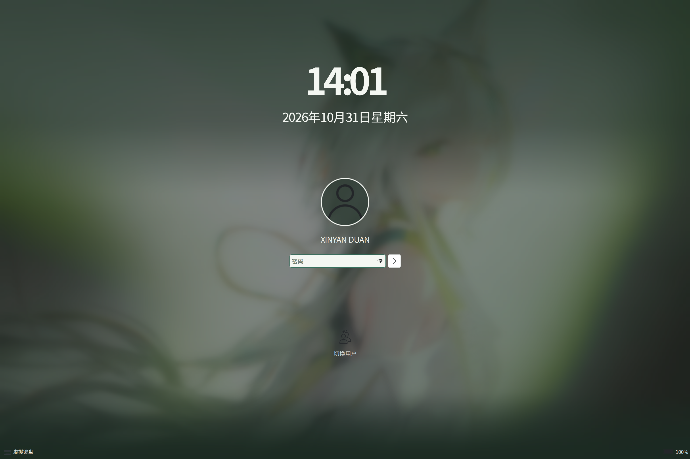
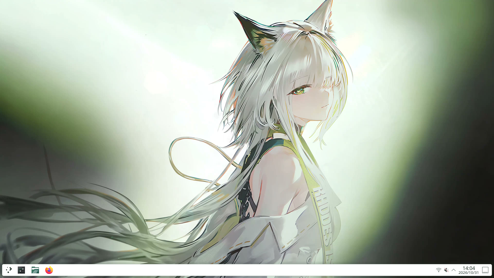
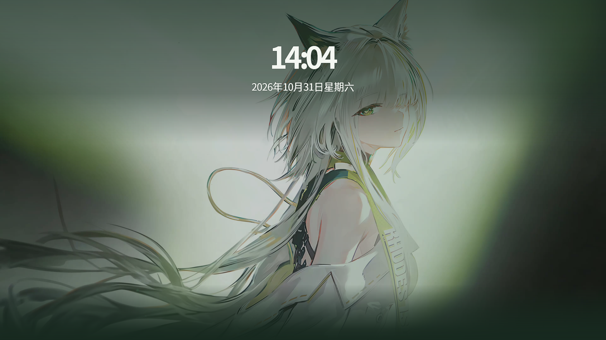
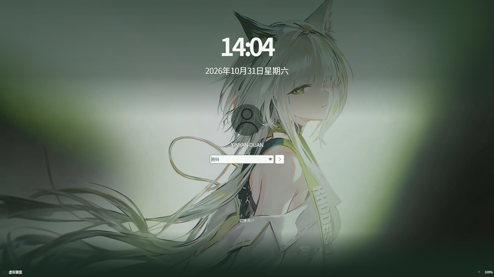

凯尔希 · 医疗白绿
1.1.0-rc.2 · 修复密码页过亮
锁屏采用白字、深绿衬底与原生压暗效果，桌面保持暖白。
主组为 3120×2080 / 175% 的 RHI 原生截图；补充组为 1920×1080 / 100% 的软件后端截图。锁屏均使用独立会话测试模式。
桌面 · 3120×2080 / 175% · Qt Quick RHI / Mesa software OpenGL 原生启动菜单 · 3120×2080 / 175% · Qt Quick RHI / Mesa software OpenGL
原生启动菜单 · 3120×2080 / 175% · Qt Quick RHI / Mesa software OpenGL Dolphin 文件管理器 · 3120×2080 / 175% · Qt Quick RHI / Mesa software OpenGL
Dolphin 文件管理器 · 3120×2080 / 175% · Qt Quick RHI / Mesa software OpenGL Konsole 浅色终端 · 3120×2080 / 175% · Qt Quick RHI / Mesa software OpenGL
Konsole 浅色终端 · 3120×2080 / 175% · Qt Quick RHI / Mesa software OpenGL 原生通知 · 3120×2080 / 175% · Qt Quick RHI / Mesa software OpenGL
原生通知 · 3120×2080 / 175% · Qt Quick RHI / Mesa software OpenGL 原生锁屏 · 待机 · 3120×2080 / 175% · Qt Quick RHI / Mesa software OpenGL
原生锁屏 · 待机 · 3120×2080 / 175% · Qt Quick RHI / Mesa software OpenGL 原生锁屏 · 密码输入 · 3120×2080 / 175% · Qt Quick RHI / Mesa software OpenGL
原生锁屏 · 密码输入 · 3120×2080 / 175% · Qt Quick RHI / Mesa software OpenGL
桌面 · 1920×1080 / 100% · Qt Quick software
原生锁屏 · 待机 · 1920×1080 / 100% · Qt Quick software
原生锁屏 · 密码输入 · 1920×1080 / 100% · Qt Quick software
Qt/KSVG 素材检查 · 文件夹与面板素材保持
本页为原始测试截图。rc.1 的实机过亮反馈已纳入修复；rc.2 的实屏验收状态见正式版准备记录。
截图来源 · 文件哈希 · 正式版准备
指针原作者：一球咸鱼 · 作者视频 · 完整素材署名